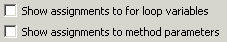

Audit - Rules - Semantic ErrorsDescriptionThis group contains audit rules that report coding practices that often indicate that the code will not perform the way the program might expect. |
Rules:
|
Summary
The compareTo method is expected to throw ClassCastException and NullPointerException.
Description
It is not necessary to test the value of the argument to compareTo prior to casting it. If the argument is null a NullPointerException should be thrown. If it is of the wrong type a ClassCastException should be thrown. This rule finds implementations of the compareTo method that explicitly catch those exceptions when they should not.
Example
The following implementation of compareTo tests the argument against null and uses the instanceof operator to check the type of the argument:
public int compareTo(Object o)
{
if (o == null) {
return 1;
} else if (!(o instanceof MyClass)) {
return 0;
}
return value - ((MyClass) o).value;
}
It should be replaced by the following, cleaner, implementation:
public int compareTo(Object o)
{
return value - ((MyClass) o).value;
}
Summary
Avoid using the equals() method to compare array and non-array types because this call always returns false.
Description
This rule looks for places where the equals() method is used to compare array and non-array types. Such a comparison will always return false, and thus usually indicates an error.
Example
The following code whould be flagged as a violation because it contains an incorrect comparison:
public void myMethod(String a[]) {
if(a.equals("INCORRECT"))
return;
}
}
Summary
Arrays should not be compared using equals (==), not equals (!=), or equals().
Description
Arrays should always be compared using one of the comparison methods defined for arrays. This audit rule looks for comparisons using either the equals (==) or not equals (!=) operators or the equals() method.
Example ... char[] currentName, proposedName;
if (proposedName != currentName) {
...
}
Summary
Avoid the use of octal literals.
Description
This audit rule finds uses of octal literals (numeric literals that begin with a zero). Numeric literals should be expressed in either decimal or hexidecimal formats in order to avoid confusion.
Example
The following numeric literal would be flagged as a violation:
0010
Summary
Character literals should not be used as the argument to the constructor of either a StringBuffer or StringBuilder.
Description
This audit rule finds places in the code where a character literal is used to initialize a newly created StringBuffer or StringBuilder. This has the (presumably) unintended result of converting the character literal into an int to set the initial size of the StringBuffer or StringBuilder.
Example
The following expression would be flagged as a violation:
new StringBuffer('c');
Summary
Avoid comparing objects whose types do not have any common parent classes or interfaces using the equals method.
Description
This audit rule looks for places where incompatible types are compared using the equals method. Such a comparison will always return false, and thus usually indicates an error.
Example
The following invocation of the equals method will be marked as a violation because the types are incompatible:
public class MyClass {
.........
}
public void myMethod(MyClass obj, String a[]) {
if(obj.equals(a))
return;
}
}
Summary
Re-adding objects in a container to its contents is usually a typo which could result in an inpredicted behaviour of a code.
Description
This audit rule violates container storing operations such as addAll() or removeAll() when they are invoked with the same container as an argument.
Security Implications
Such invocation is usually a typo which indicates a plain error in a logic of the code. Such code will not function as expected and could result in any security threat from Denial of Service to data leaks when used in security-sensitive areas.
Example
The following method is supposed to remove all banned users from the given list of users trying to access secure data but will fail because of the typo; this typo would thus be marked as violation:
protected void filterBannedUsers(List allUsers) {
List bannedUsers = new ArrayList();
for (Iterator i = allUsers.iterator(); i.hasNext();) {
User user = (User) i.next();
if (isBanned(user)) {
bannedUsers.add(user);
}
}
}
Summary
A null value is dereferenced as if it had an object value.
Description
Method invocation and field access on null values will cause errors. In expressions following explicit comparisons to null, such as (x == null && x.getValue()), dereferencing the null pointer will cause an error. These usually indicate typographical errors such as substituting && for || in the boolean expression.
Example
The method invocation in the following condition would be flagged as a violation:
if (object == null && object.getData() == null) ...
Summary
Floating-point values should not be compared using equals (==) or not equals (!=).
Description
This audit rule finds places where two floating-point values are compared using either the equals (==) or not equals (!=) operators. The problem is that floating-point values are not exact, and floating-point operations sometimes introduce rounding errors. This sometimes results in getting the wrong result from equality-based comparisons.
Example
Given two floating point variables:
double oneThird = 1.0 / 3.0;
double anotherThird = (2.0 / 3.0) - oneThird;
The following expression would be flagged as a violation:
if (oneThird == anotherThird)
Summary
The methods saveState() and restoreState() should both be implemented at the same level of class hierarchy.
Description
It is improper to implement the saveState() and restoreState() methods of a StateHolder on different levels of a class hierarchy. This approach is error-prone and should be avoided. This rule looks for classes that implement only one or the other of these method but not both.
Security Implications
This approach is error-prone and thus can aid an attacker.
Example
The following class implements only one of the two state methods and will be marked as violation:
public abstract class AbstractStateHolder implements StateHolder {
public Object saveState(FacesContext ctx) {
...
}
}
Summary
Inconsistent conversion using toArray() will cause a ClassCastException.
Description
This audit rule finds places where toArray() is invoked, but the result is cast to an incompatible type.
Example
The following would be flagged as a violation:
List foo = new ArrayList();
(String[]) foo.toArray(new Integer[0]);
Summary
The actual type of an argument is incorrect.
Description
Several methods defined in the interface java.util.Map (and java.util.concurrent.ConcurrentMap) are declared with parameters of type Object even though they are expected to be of the same type as either the keys or the values. This audit rule looks for invocations of these method in which the argument type does not conform with the expected type. Even though the compiler can't identify such invocations as an error, they are almost always wrong.
Specifically, the rule looks for invocations of the following methods:
java.util.Map.containsKey(Object)
java.util.Map.containsValue(Object)
java.util.Map.get(Object)
java.util.Map.remove(Object)
java.util.concurrent.ConcurrentMap.remove(Object, Object)
Example
Given the following declaration:
Map<String, String> nameMap;
The following invocation would be flagged as a violation:
nameMap.get(new Integer(42))
Summary
If compareTo() is overridden for a type, then equals() should be overridden as well.
Description
When implemented, the compareTo() method should override compareTo(Object), and it should be consistent with equals(). That is, a.compareTo(b) should return 0 if and only if a.equals(b) returns true.
Specifically, this rule flags cases where compareTo() is overridden but equals() is not and cases where compareTo() is overloaded instead of overridden.
Example
The following would be flagged as a violation, since it overrides compareTo, but not equals:
public class MyClass {
public int compareTo(Object o) {
return true;
}
}
Summary
Null pointers should not be dereferenced.
Description
This audit rule checks for places where a value that is known to be null is being dereferenced in a way that is guaranteed to produce a NullPointerException.
Example
The following code will cause a violation because the variable o is known to have a null value:
Object o = null;
System.out.println(o.getClass().getName());
Summary
Obey the general contract when overriding equals().
Description
The equals() method defined in Object is intended to be overridden by subclasses but each subclass must obey the general contract specified by the superclass. Classes should not use the name "equals" for methods that take any parameters other than a single Object. The body of the method should be coded defensively to accept any class of object as its argument.
Example
The style of equals() definition that this rule looks for is this:
public boolean equals(Object arg) {
if (this == arg)
return true;
if (!(arg instanceof Foo))
return false;
Foo fooArg = (Foo) arg;
...
}
"Foo" is the name of a type, which is either the class that declares this equals() method or an interface that is implemented by that class.
Summary
Classes should override both equals() and hashCode() if they override either.
Description
This audit rule finds classes in which either the equals() or hashCode() method has been overridden, but not both.
Example
The following class declaration will be flagged as a violation because it overrides the method equals() but does not override the method hashCode():
public class Employee
{
private String name;
...
public boolean equals(Object object)
{
return object instanceof Employee
&& getName().equals(((Employee) object).getName());
}
}
Summary
Questionable assignments may lead to semantic errors.
Description
This audit rule checks for assignments to for loop variables within the loop body or assignments to method parameters within the body of the method. While these may sometimes prove useful they often have unintended side effects. Be sure you really mean to make these assignments!
Example
The assignment to "index" in the following method would be flagged as a violation because it is a method parameter:
public int lastIndexOf(Object[] array, Object value, int index)
{
index = array.size() - 1;
while (index >= 0) {
...
}
}

Summary
Redundant assignments should never be used.
Description
This audit rule checks for the assignment of a variable to itself. This often indicates a missing qualifier, such as "this." for one or the other of the identifiers.
Example public void setName(String name)
{
name = name;
}
Summary
Strings should not be compared using equals (==) or not equals (!=).
Description
Strings should always be compared using one of the comparison methods defined for strings. This audit rule looks for comparisons using either the equals (==) or not equals (!=) operators.
Example ... String currentName, proposedName;
if (proposedName != currentName) {
...
}
Summary
In order to be stored in a hashed collection, a class must override both the equals() method, and the hashCode(), or else it must not override either.
Description
This audit rule finds places where a type that only overrides one of equals() or hashCode() is used in a hashed collection.
Summary
Unnecessary type casts should be removed.
Description
This audit rule checks for places where a value is being cast to another type and the type cast is not necessary. This includes the following cases:
- casting from one type to the same type,
- casting from one type to a supertype of that type,
- casting to a more specific type when the result will be assigned to a variable of the same type, or
- casting immediately prior to using the instanceof operator to test the type.
Example
The following cast would be flagged because the type of the literal is already int:
int i = (int) 0;
The following cast would be flagged because the variable list can be assigned to the variable collection without the cast:
List list = new ArrayList();
Collection collection = (ArrayList) list;
Summary
Use deep Arrays methods when necessary.
Description
The toString(), equals(), and hashCode()methods in the Arrays class are shallow methods. That is, if you pass in an array of arrays, the elements in each sub-array will not be considered during the operation. Instead use the deepToString(), deepEquals(), and hashCode()
Example
The following would be flagged as a violation:
Arrays.toString(new int[][] {{1, 2, 3}, {4, 5, 6}});
Summary
An Iterator's next() method should always be able to throw NoSuchElementExceptions in case a client ignores a false return from hasNext().
Description
This rule looks for Iterators whose next() method will never throw a NoSuchElementException.
Example
The following would be flagged as an error:
public class FooIterator implements Iterator {
public Object next(){};
}
Summary
Long literals should use 'L' for a suffix.
Description
This audit rule looks for long-valued literals whose suffix is a lower-case 'l'. Although the language specification allows this, it is too easily confused with the number one (1), and hence should not be used.
Example public static final long ONE = 1l;